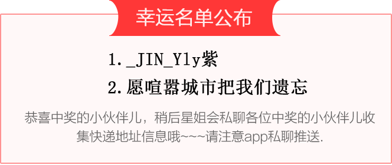
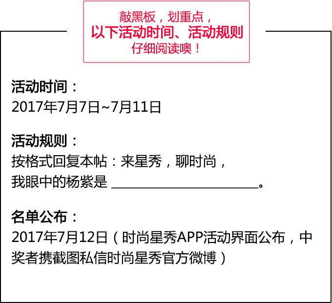

1999年参演《如此出山》，正式进入演艺圈，如今25岁的她已是在演艺圈成功奋斗18年的知名演员。
她是杨紫，《家有儿女》中青春亮丽、健康活力的夏雪
《战长沙》中明丽活泼、端庄大气的胡湘湘
《欢乐颂》中单纯热心、迷糊懵懂的邱莹莹
从业十余年，杨紫从未固定化自己的标签，她用心刻画每个角色，作品也逐渐显露现实、正剧的“中正”风格，让
观众忘记了当年的邻家妹妹小雪，认识到了一个百变、认真的演员杨紫。
星秀福利社，本周福利
#杨紫#签名照2张！喜欢杨紫的你，
按照如下规则参与互动，
即有机会获得杨紫亲笔签名照一张噢。

